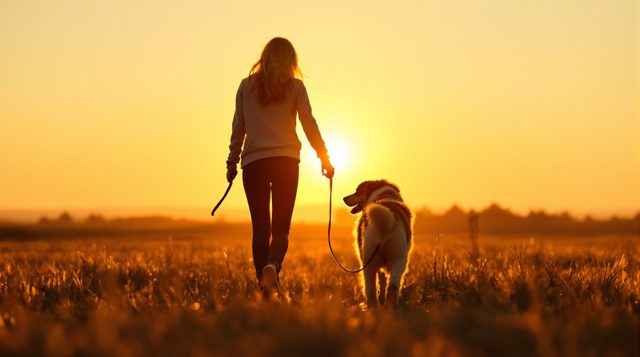
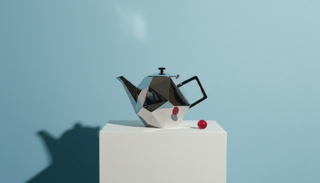
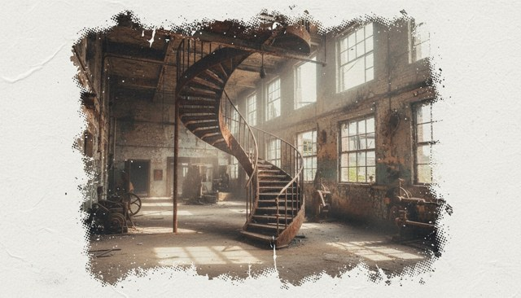
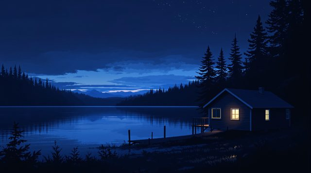

Director's Lookbook
Your prompt says
Name the look.
cinematic.

Golden Hour

Botanical Nest Illustration

Plinth Still Life, Red Accent
Bossa Nova

Decaying Halftone Photo
Worm's-Eye Low Angle
Deep House

Blue Hour Cool